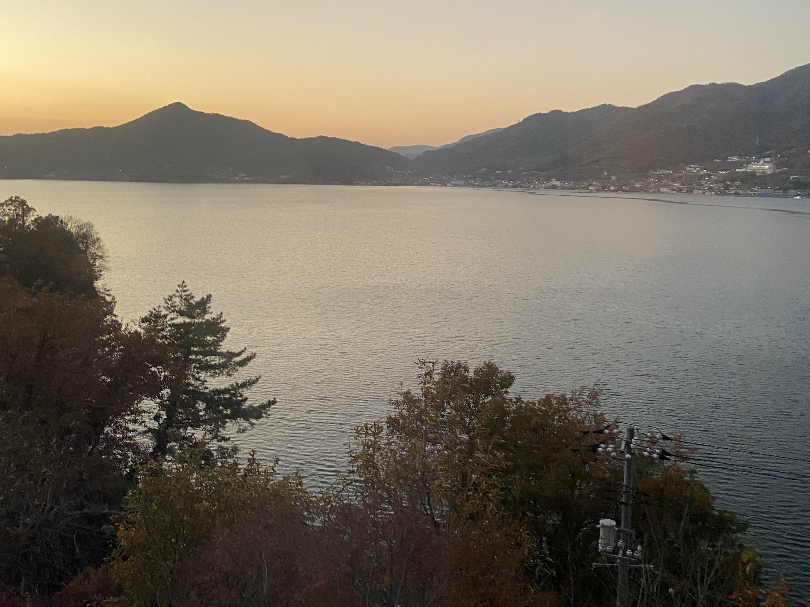
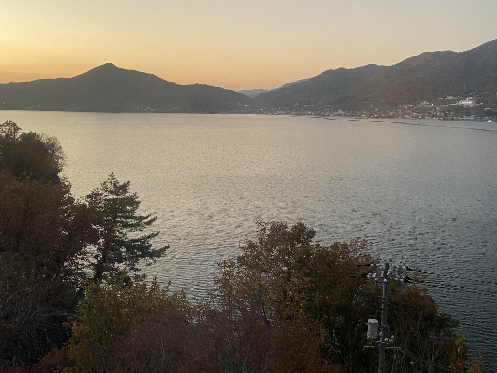
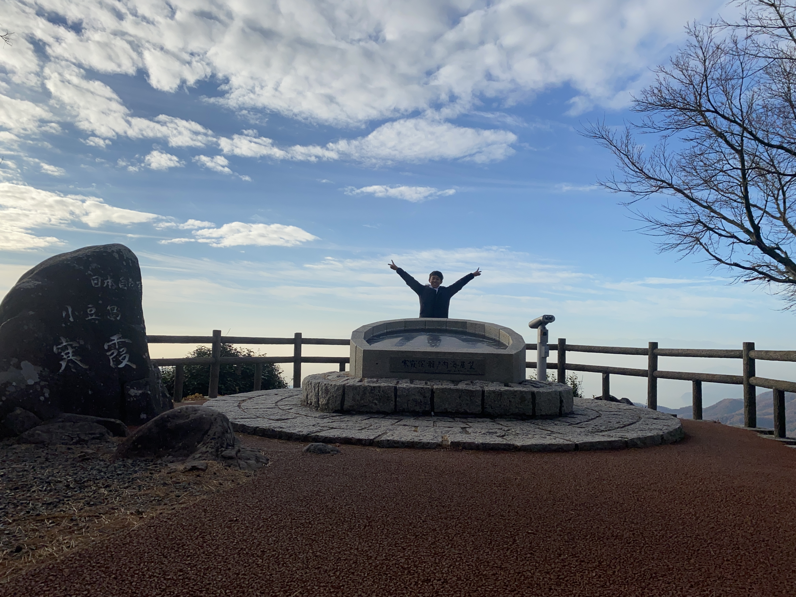
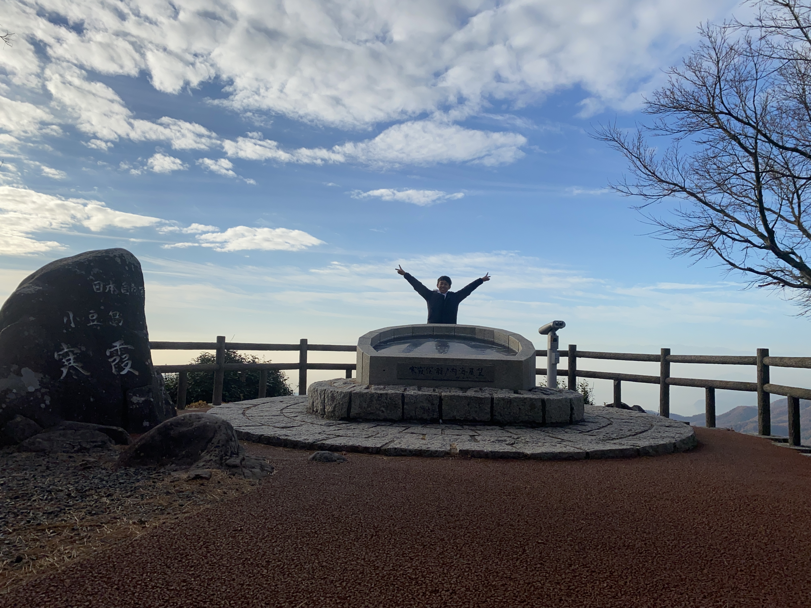
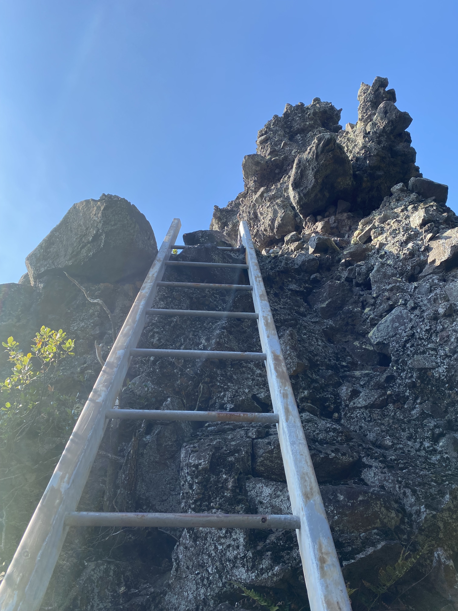
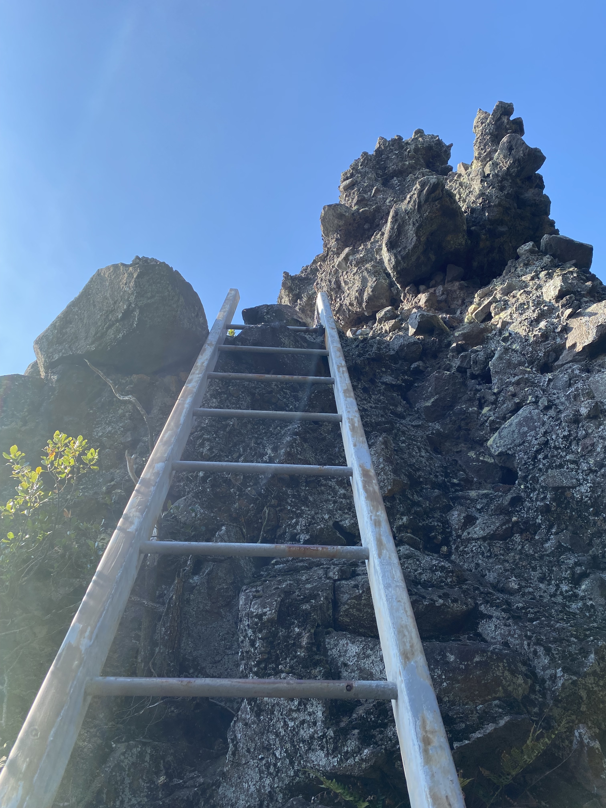

0日目
神戸港からフェリー乗車
神戸1:00発小豆島7:30着フェリー。25歳以下だと往復4000円切る。安いね。フェリーの中はとっても綺麗。12/10なのもあって、船内はクリスマス仕様！船内にはなんとお風呂とサウナもあるよ。最強。木曜深夜便なら3畳のゴロゴロスペース1人で使える。余裕で寝れる。かなり満足なフェリー旅。この時点でテンションはかなり上がる


1日目
重岩(かさねいわ)
重岩(かさねいわ)。なんでこんなところに岩があるんだろう？人工？天然？どうも分からないみたい。岩の感想はそれだけ。感動したのは景色。とにかく景色が綺麗。島ならではの海と森。しかも僅かに紅葉。完璧すぎないか？朝9時くらいに登ったけど最高のスタートダッシュ。


エンジェルロード
エンジェルロード。干潮の時だけ出てくる道。ほんとかいな。こんな広いのに干潮だけしか姿表さないとかある？って思ってました。恋人と手を繋いで渡ると永遠の愛がうんたらかんたら。


こまめ食堂
こまめ食堂。棚田の前で食べるおにぎり定食。絶対美味しいよね。ビジュアルに惹かれすぎて来店。大学生男が食べてかなり満足する量。全部美味しかったけど、衝撃受けたのは醤油。正直驚いた。今まで使ってきた醤油とはわけが違う。これから当分この醤油を使っていきたい。

道の駅ふるさと村
道の駅ふるさと村。これなんだと思う？素麺だって。こんなふうに作られてるんだね。風でゆらゆらしててとても綺麗だった。 あと豆モビもあったよ。どうも、2人乗りの原付で今小豆島で実証試験やってるんだって！！めっちゃ可愛い！！今度乗りに行くしかねぇ！
道の駅オリーブ園
道の駅オリーブ公園。いろんな角度から350飛びくらいしてた。ど定番の観光地。リモート撮影可の三脚もあるので写真撮影は簡単。やっぱここ来たら魔法少女にならないと。後ろからの風景もとてもよい。ってか人少なすぎては？ほぼ貸切状態だった。


キッチンくいしんぼ
カウンターに色々な料理が置いてあって、そこから欲しいものを注文するスタイル。20:00くらいに空いてる店がここしかなかったのもあって来店。ここでの感想もこれ。「小豆島の醤油うますぎんか？？」本当に日本人の常識を変えていくような醤油が置いてある島、小豆島。大好き。

SENゲストハウス
SENゲストハウス。とっても綺麗でいい宿だった。札幌からきた自由に旅してる人と季節職でいろんな所で働いてる人と出会っていろんな話を聞いた。生き方から小豆島情報までいろいろと。初めて来たけど本当によかった。これからの一人旅はゲストハウスにするかも。

 


2日目
碁石山
碁石山。ゲストハウスの現地の人に教えてもらった。めっちゃ景色いい。朝日が差し山って本当に綺麗だよね。ここの景色が本当によかった結構忘れられないぜひ行くべきスポット。本当にここ道なのか？みたいな道を進んでいく楽しさもある。安全対策は何もされてなかったのでいく人は頑張ってね。

寒霞渓
寒霞渓。定番どころ。日本三大なんたら。正直に言うよ。景色は他の山(碁石山、銚子渓、西ノ滝)の方がいい！定番を抑えるという意味では行ってもいいけど、めちゃオススメではない。朝8:00に着いたのもあるけど人がいなくて写真も独り占め。土曜日なのに！！やったね！ジャンプもできちゃう！
 

マルキン醤油記念館
醤油〜醤油〜。資料館の入場400円。え？高くない？と思ったけど課金。そしたら醤油一本プレゼント！って言ってもらった。クーポンもついてた。 とにかくホンモノの醤油はうまい。そこら辺の醤油しか使ったことない人はぜひ取り寄せて一回使って欲しい。もしくは俺の家舐めにきてほしい。本当うまい。
西の滝神社
西の滝神社。ここも現地の方にお勧めされてきたところ。いやここも本当いい。景色めっちゃ綺麗。小豆島景色全振り施設めちゃ多いな。景色好きなわい、すっごいテンション上がってた。最後の最後は岩に登る梯子があるよ。梯子があるだけ碁石山より優しいけどやっぱり怖いね。度胸試しもできる楽しいとこ

 


井上誠耕園
井上誠耕園(オリーブ屋)直営レストラン。めちゃ美味しかったパンもたくさん追加。完熟エキストラバージンと未熟な若オリーブ(？)とかオリーブオイルの食べ比べができるのもいいところ。あと窓側景色綺麗すぎでは？オリーブ畑が一望できる。めちゃいいお店だった。
銚子渓
銚子渓&猿。2枚目には猿がたくさんいるよ。ここも景色がいいんだなぁ。本当にいいんだなぁぁ。もう景色がいいパターン多すぎて言うことないけど。えげつないめっちゃいい。あと猿いっぱいいる。ってかどの山も岩石たくさんあるよね。なんでだろ？森林限界ってわけでもなさそうなのに。とにかく綺麗！


エンジェルロード~2nd season~
エンジェルロード。本当に満潮になると道なくなるのかあまりにも信じられなかったので再来場。本当になくなってた。まじか。海ってちょっと怖いね。って思った一時。比較用前日写真。すっげぇ。